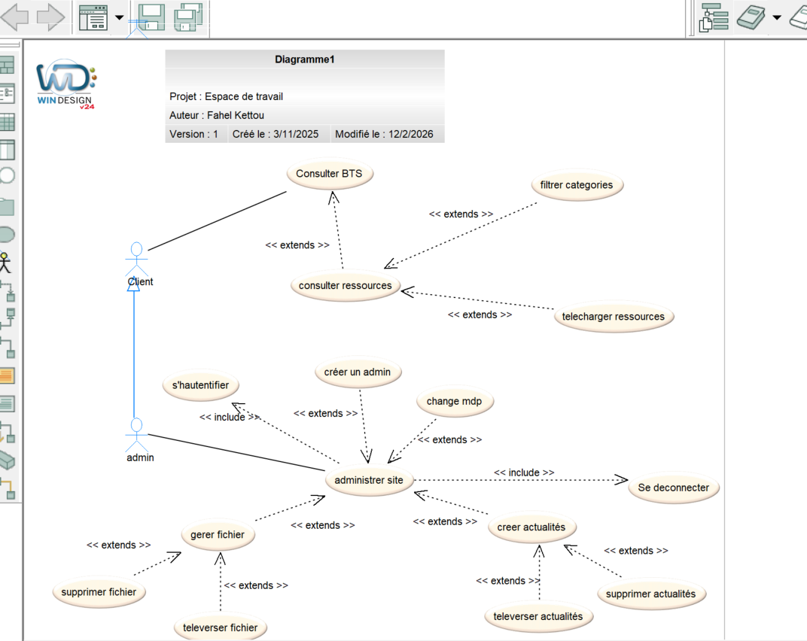

Refonte complète d'un site pédagogique avec Laravel, Dashboard administrateur sécurisé et déploiement Docker
Le Lycée Christophe Colomb disposait d'un site web statique pour la section BTS CIEL (Cybersécurité, Informatique et réseaux, Électronique). Ce site nécessitait une refonte complète pour moderniser son architecture et faciliter sa maintenance.
Ma mission consistait à transformer ce site en une application web dynamique avec un système de gestion de contenu permettant aux enseignants de mettre à jour facilement les ressources pédagogiques.
Modélisation UML avant le développement
Avant de commencer le développement du site en Laravel, j'ai réalisé un diagramme de cas d'utilisation (Use Case) afin de formaliser l'ensemble des fonctionnalités prévues et de structurer ma réflexion.
Ce diagramme m'a permis de présenter clairement mes idées à mon tuteur de stage, qui a pu suivre mon raisonnement et valider chaque fonctionnalité avant que je ne commence à coder. C'est une étape essentielle pour s'assurer que le développeur et le commanditaire partagent la même vision du projet.

Réalisé avec WinDesign v24 — Version 1, créé le 3/11/2025
Les différentes étapes du développement
Transformation complète du site statique en application MVC avec le framework Laravel et le moteur de templates Blade.
Développement d'une interface d'administration complète pour la gestion du contenu du site.
Mise en place de mesures de sécurité robustes pour protéger l'accès administrateur.
Configuration complète pour le déploiement de l'application en environnement de production.
Schéma de l'infrastructure containerisée
┌─────────────────────────────────────────────────────────────────────────────┐ │ DOCKER COMPOSE │ ├─────────────────────────────────────────────────────────────────────────────┤ │ │ │ ┌─────────────────┐ ┌─────────────────┐ ┌─────────────────┐ │ │ │ bts-ciel-app │ │ bts-ciel-db │ │ bts-ciel-pma │ │ │ │ │ │ │ │ │ │ │ │ Laravel 11 │◄──►│ MySQL 8.0 │◄──►│ phpMyAdmin │ │ │ │ PHP 8.3 │ │ │ │ │ │ │ │ Apache │ │ Base: bts_ciel │ │ │ │ │ │ │ │ │ │ │ │ │ │ Port: 80 │ │ Port: 3306 │ │ Port: 8080 │ │ │ └─────────────────┘ └─────────────────┘ └─────────────────┘ │ │ │ │ │ │ │ │ │ │ │ │ ┌───────▼──────────────────────▼──────────────────────▼───────┐ │ │ │ bts-ciel-network │ │ │ │ (Bridge Network) │ │ │ └─────────────────────────────────────────────────────────────┘ │ │ │ └─────────────────────────────────────────────────────────────────────────────┘ Volumes persistants: ► mysql_data → /var/lib/mysql (données MySQL) ► ./public/img → /var/www/html/public/img (images du site)
Ce que ce projet m'a permis de développer
N'hésitez pas à me contacter pour discuter de vos projets ou pour une opportunité d'alternance.